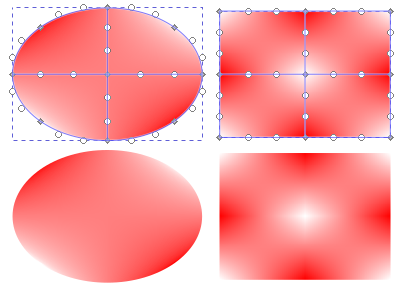
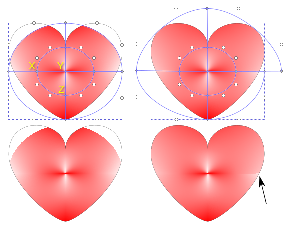
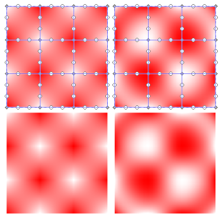

网格渐变工具
快捷键：无
网格渐变工具( )用来创建网格渐变。网格渐变工具通过对渐变网格的调整来实现对象的颜色控制。
{kind=link}
图 13-1: 两个简单的网格渐变效果
上图中，两个椭圆完全相同，两个矩形也完全相同；区别在于是否显示渐变网格线。
操作方法
先画一个矩形，然后填充一种颜色，比如红色；
用鼠标在矩形内点击并拖动一段距离，然后松开鼠标即可。
(在矩形外点击拖动也可以)
(上面第3步工具选项中的行列数值必须在创建网格渐变之前就设置好，因为网格渐变创建之后无法再修改)
(行和列的值决定了网格渐变对象的渐变块的数量)
(虽然行或列的数值在网格渐变创建之后无法修改，但可以通过双击现有的网格线来添加控制点和控制线；此方法只会添加渐变控网格线和网格节点，当前的颜色效果保持不变，如果想改变颜色效果，可以进一步编辑新添加的网格节点)
(网格渐变中的网格线上有很多点，其中深色的小菱形点是网格节点，它用来控制颜色，操作方法类同于贝塞尔曲线的节点或者普通渐变的色标；您可以用网格渐变工具选中网格节点后，在菜单 对象→填充与描边 中对网格节点的颜色进行修改)
(网格线上白色的小圆点是网格节点的控制手柄，通过这个手柄可以控制网格节点的相邻路径，从而达到控制颜色的影响范围的目的)
(网格渐变的颜色效果由三个要素控制：网格节点的颜色/透明度；手柄相对节点的距离；手柄相对节点的角度)
(网格节点即使未被选中，也可以对其手柄进行编辑)
(控制手柄被激活后，会变成三角形，其尖角指向对应的网格节点)
(某一个控制手柄被激活后，其所属的网格节点的其它手柄会同时被激活)
(渐变中的网格线实际上是贝塞尔曲线，可以使用钢笔工具进行调整)
(使用钢笔工具调整时，网格节点等同于节点；控制手柄相同，但不会显示控制手柄的线段，同时钢笔工具的工具选项会失效)
(上面使用钢笔工具时，节点有可能不是网格节点)
(每一个渐变块都有对应的张量控制点，张量控制点为正方形)
(移动张量点可以收紧或伸展渐变块内的颜色；也会影响渐变块外部)
(显示张量点：框选一个渐变块的四个网格节点，按Alt+G即可显示张量控制点)
(隐藏张量点：张量点如果不隐藏会一直显示，隐藏的方法是框选渐变块的四个网格节点后按Alt+G)
(上面框选渐变块的四个网格节点的操作，也可以换成Shift+点击的方式)
(网格渐变的颜色被限制在形状内部，可以小于形状范围，但不能超出形状范围)
{kind=link}
{kind=link}
辅助快捷键
{kind=link}
{kind=link}
工具选项
-
提示
 驿窗注：默认情况下，锥形渐变有时无法完整填充您的形状，因为它要保持锥形；可以通过后续对网格线的调整来改变默认填充效果。
驿窗注：默认情况下，锥形渐变有时无法完整填充您的形状，因为它要保持锥形；可以通过后续对网格线的调整来改变默认填充效果。锥形的尖部节点(中心节点，即下面图13-3中的节点Y)受 列值 控制，即，尖部的网格节点数=列值+1(不能少于4列)；如果尖部只显示了一个网格节点，其实是因为节点重合的原因，点击并移动尖部网格节点即可分别编辑。
另外，锥形渐变在后续调整过程中可能产生裂缝；裂缝是一直存在的，只是在未调整时并不明显。
锥形尖部及锥形裂缝处的网格节点可能会产生重合，在选择节点时会带来困扰，可以按下面方法选择(参考下面图13-3中的左上图)：
(假设我们想选中连接节点X的节点Y；因为节点Y处实际上有五个节点，所以无法直接选中与X连接的节点)
(确保节点X与节点Y之间没有其它节点)
先选中节点X；
按Ctrl不松手，点击节点X与节点Y之间的网格线。
(此时节点Y已经处于选中状态，可以改变颜色来测试)
(同理，如果想选中与节点Z连接的节点Y，需要先选中节点Z，再按Ctrl不松手，点击节点Z与节点Y之间的网格线即可)
(上面操作的原理是，如果已经选中了一个网格节点，那么再按Ctrl+点击其邻近的网格线时，会把选中节点切换为网格线另一端的节点)
图 13-3: 锥形渐变的不完整填充及裂缝
上图中：
上方图形与下方图形完全相同，但上方图形显示了渐变网络；
左图是对心形填充了渐变网格，类型为锥形；
可以看出，左图填充后，上面两侧有部分区域未填充；
右侧图形是对左侧的图形的渐变网格进行调整，以填充完整；
因为对渐变网格进行了调整，所以右侧图形的箭头处裂缝比较明显；
渐变网格线的调整可以参考图13-3的上面两张图；
(
 )：描边；在描边里创建渐变。
)：描边；在描边里创建渐变。( 行 )：网格渐变的行的数量，最大20。(这里的数量不是指线的数量，是指格的数量)
( 列 )：网格渐变的列的数量，最大20。(这里的数量不是指线的数量，是指格的数量)
(
 )：椭圆线；让选中的网格线段变成椭圆线。此功能需要尝试，在当前线段已经接近椭圆线时最易生效。
)：椭圆线；让选中的网格线段变成椭圆线。此功能需要尝试，在当前线段已经接近椭圆线时最易生效。( )：自动缩放；点击后可以让选中的网格渐变对象自动缩放，使其外形尺寸正好与对象的轮廓相适应。仅对网格渐变对象的边线上的网格节点有效，如果超出轮廓范围的网格节点是网格渐变内部节点，则不受此功能影响。
(
 )：警告；无编辑功能，仅仅是一个提示说明，点击按钮会弹出说明信息。
)：警告；无编辑功能，仅仅是一个提示说明，点击按钮会弹出说明信息。提示
驿窗注： SVG2标准的发展比较慢，所以，网格渐变作为SVG2标准的一部分，长时间以草案的形式存在，一些功能的正式通过需要时间。这种情况下，大家在使用网格渐变工具创建的作品时，可能会受到影响，比如把SVG文件嵌入到网页中：网页浏览器需要严格按SVG2标准来渲染SVG文件，所以，标准中未通过的功能通常不会被浏览器接受，对应的SVG图形也就无法在浏览器中正常显示。
如果您需要把网格渐变工具创建的作品用于实际应用，比如网页显示或者打印，最稳妥的方式是导出为PNG位图或者另存为PDF，PNG/PDF在应用时通常不会有问题。
( 平滑 )：平滑方式；设置网格渐变的过渡方式，默认为双线性，可改为双立方。(如果在作品创建过程中对效果不满意，可以尝试更换平滑方式，看效果如何；有时双立方更适合)
图 13-4: 左侧为双线性，右侧为双立方
{kind=link}
{kind=link}
{kind=link}
{kind=link}
{kind=link}